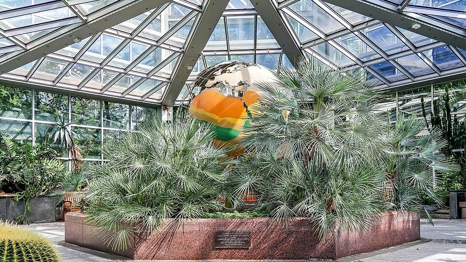

Diese Woche
12 Tipps,
davon 5 gratis
davon 5 gratis
Gude Laune
Die Wochenzeitung für Frankfurter Familien
Gratis
zum Weiterleiten in die Kita-Gruppe
Ausgabe Nr. 46 / 2026Montag, 9. bis Sonntag, 15. November 2026Frankfurt am Main
Mo 9.11.
9°
Di 10.11.
7°
Mi 11.11.
12°
Do 12.11.
12°
Fr 13.11.
8°
Sa 14.11.
8°
So 15.11.
7°
Das WochenendeSamstag, 14. & Sonntag, 15. November
Samstag · Westend

Foto: Dr. Thomas Liptak, CC BY-SA 4.0, Wikimedia Commons
Palmen, Kakteen und Tropenluft in den Gewächshäusern, 9–16 Uhr. Kinder bis 17 frei, Erwachsene 9 €.
Forschungswerkstatt: Unsere Sinne · Westend
Mitmachen im Senckenberg, 14 Uhr, im Eintritt enthalten.
Mona ist ein Vampir · Nordweststadt
Kindertheater im Titusforum, 16 Uhr, ab 18,95 €.
Sonntag · Westend

Foto: Andreas Praefcke, CC BY 3.0, Wikimedia Commons
Das Grimm-Märchen als Musiktheater am Palmengarten, ab 5 Jahren, 13.30 und 16 Uhr, Kinder ab 15 €.
Familienworkshop „Hänsel und Gretel“ · Innenstadt
Die Oper spielerisch entdecken, 11 Uhr.
Unter der WocheMontag bis Freitag
Dienstag · Ostend
Laternenzug mit St. Martin zu Pferd und Martinsfeuer, 17 Uhr.
Mittwoch · Nordend
Großes Martinsfeuer GRATIS
Im Günthersburgpark zum 30. Mal: Schattenspiel, Bläser, Kinderpunsch, 18 Uhr. Laterne mitbringen!
Donnerstag · Altstadt
Junges Museum am Römer GRATIS
Mitmach-Ausstellungen, 11–18 Uhr, bis 18 Jahre gratis.
Freitag · Westend
Mit der Taschenlampe zu den Dinos, 19 oder 20.30 Uhr, Kind 15 €, Erw. 18 €.
Flohmarkt-Ecke
Do 12.11. · Flohmarkt an der Jahrhunderthalle
8–14 Uhr, auch am Samstag.
Sa 14.11. · Flohmarkt am Mainufer
Schaumainkai, 9–14 Uhr – oft mit Spielzeug und Kinderkleidung.
Weitere Flohmärkte auf gude-laune.de
Anzeige · Nordend-Spieleverleih
Schnitzeljagd im Günthersburgpark
Mit Fips, dem Fuchs: 6 Themen, 2 Altersstufen – als PDF zum Ausdrucken für den nächsten Kindergeburtstag.
nordend-spieleverleih.de/schnitzeljagd
Alle Termine: gude-laune.deAngaben ohne Gewähr